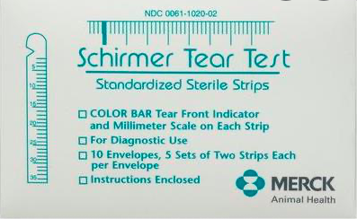
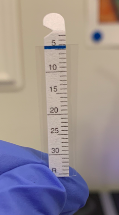
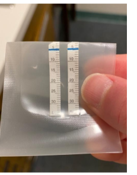
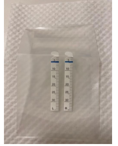
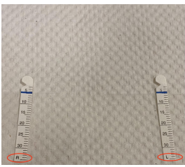
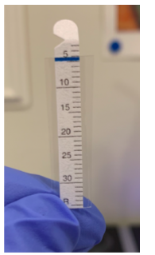
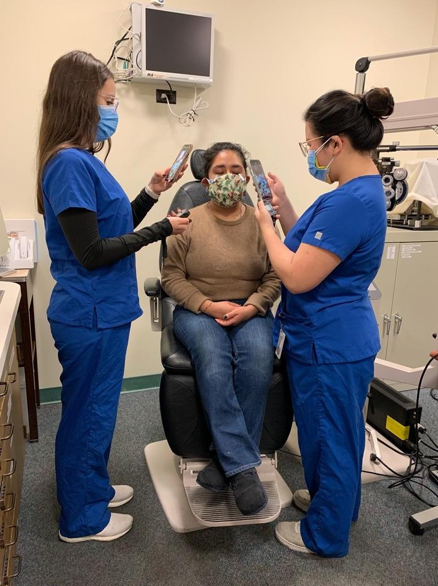
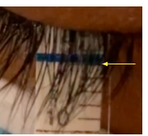
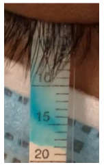
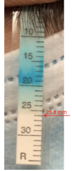

Welcome to the UC Berkeley Clinical Research Center Tear Aqueous Production Study Website
Hello and welcome to the University of California, Berkeley Clinical Research Center’s Tear Aqueous Production Study website! This website is meant to provide information on the study and detail how to collect data in your office setting.
Unlike normal clinical Schirmer testing, this modified Schirmer test has specific steps and procedures that must be followed to prepare the strips and record data. Please scroll down and watch the videos, then continue to follow the step-by-step guide on preparing the Schirmer strips and collecting data.
Schirmer Strip Information
Merck Schirmer strips (Merck Animal Health, Summit, NJ):

For these measurements you will be modifying the Schirmer strip with an adhesive sheathing to inhibit evaporation from the strip during wetting measurements:

Sheathing Schirmer Strips
This video details how to sheath the Schirmer strips prior to insertion.
Guide
*Schirmer strips should be sheathed immediately before insertion because the adhesion affects the wetted front if done too early. Do not prepare the Schirmer strips in advance.
- Check the randomization to identify which eye will have a strip inserted first (e.g., the right eye)
- Have the following materials ready:
- Clean paper towel
- Packing tape
- Schirmer strips
- Wash your hands
- Lay out a strip of packing tape (about 5 inches long) on the clean paper towel
- While still in the clear packaging, fold the Schirmer strips at the strip indentation. This will make the strips easier to insert into the subject’s eyes.
- Unfold the Schirmer strips while still in the clear packaging
- Identify which strip is right and left by locating the “R” and “L” on the bottom left-hand corner of each strip
- Open the Schirmer packaging and remove the first strip that is to be inserted in the subject’s eye (e.g., If the first eye is the right eye, remove the strip labeled “R” first)
- Place the first strip on the tape, leaving enough tape on the side to completely cover the strip and have at least 3.0mm excess on each side, as well as lining up the 5.0 mm line of the strip with the top edge of the tape
- Take out the second strip and repeat step 9. Do not dispose of the strip packaging.
- Fold the tape over to cover the strip of the eye randomized first (e.g., right strip), lining up the top edge of the tape with the strip’s 5.0 mm mark
- Gently press on the sides of the strip to eliminate air bubbles within the tape. Residual air within the tape adjacent to the right and left edges of the strip is okay because you will later cut where the tape adheres to itself.
- Repeat steps 11 and 12 for the other strip
- Cut out the strips in the order that they are to be inserted (e.g., right strip cut out first), leaving approximately 2.0-3.0 mm of tape on either side of the strip, but cutting flush to the bottom of the strip so there is no excess tape hanging from the bottom
- Insert the strips into the clear Schirmer packaging. Leave strips in the packaging until ready to insert into the subject’s eyes.
- Proceed to Proparacaine instillation




Instilling Proparacaine Guide
*Two drops of Proparacaine will be instilled into each eye one minute apart. Proparacaine is used to isolate basal instead of reflex tearing.
- Check the randomization to identify which eye will have the Schirmer strip inserted first
- Have the following materials ready:
- Proparacaine bottle
- Gloves
- Facial tissue
- Put on gloves
- Give the subject a sheet of facial tissue to remove excess Proparacaine after instillation
- Have the subject tilt their head back and instruct their gaze down
- Instill one drop of Proparacaine in the first randomized eye (e.g. right eye)
- Advise subject to use facial tissue to gently dab eyelids dry. The subject should avoid rubbing their eye with the facial tissue.
- Repeat steps 6 and 7 for the second eye
- Start timer for 1 minute
- After 1 minute, repeat steps 5-9
- Proceed to wiping of eyelid margins
Wiping Eyelid Margins
This video demonstrates how to wipe the subject’s eyelid margins following Proparacaine instillation. Wiping eyelid margins is necessary to remove excess Proparacaine to obtain accurate results.
Guide
- Have the following materials ready:
- Sterile cotton tipped applicator
- Gloves
- Continue to wear gloves from Proparacaine instillation
- Take the cotton tipped applicator out of its packaging
- Instruct the patient to look up and gently pull down on the lower lid of the right eye
- Wipe the lower lid margin with the cotton applicator twice, applying a little bit of pressure, but making sure to avoid contact with the cornea
- Instruct the subject to look down and gently pull up on the upper lid to reveal the lid margin
- Wipe the upper lid margin twice
- Repeat steps 4-7 on the left eye
- Proceed to Schirmer strip insertion
Schirmer Strip Insertion Guide
*A minimum of 2 investigators will be needed before Schirmer strip insertion—one investigator video recording and timing each eye. If 2 investigators are present, first have each investigator record the videos while timing each eye (see below).

After visit completion, one investigator reviews the Schirmer strip videos and records the data. If 3 investigators are present, 2 investigators call out wetted lengths while video recording and timing each eye while a third investigator records the data simultaneously.*Please review how to read the Schirmer strips prior to Schirmer strip insertion under “Schirmer Strip Measurement Guide” and “Tips for Recording the Schirmer Strips”.
- Have the following materials ready:
- Sheathed Schirmer strips
- Two phones with video capability
- Two stopwatches
- Continue to wear gloves from Proparacaine instillation
- Instruct the second investigator to stand on the side of the eye they will record (first eye being measured) and to have the stopwatch on hand and the phone set to record video
- Instruct the subject to tilt their head back
- Remove the first strip that was randomized (e.g., the right strip) out of the clear Schirmer packaging
- Instruct the subject to direct their gaze up and pull down on the lower lid
- Insert the first strip on the lateral edge of the inferior fornix and instruct the subject to keep their eyes open until after the second strip is inserted
- Once the strip is inserted, the first recorder should begin their manual stopwatch and begin video recording the first strip
- Repeat steps 5-8 for the other eye’s strip (e.g., left eye’s strip)
- Instruct the subject to close their eyes after both strips have been inserted
- Proceed to Schirmer strip measurement
Schirmer Strip Measurement
This video shows Schirmer strip saturation being taken for a subject over a 5-minute interval. Measurements are recorded to the tenth of a millimeter every 15 seconds. NOTE: The readings are based on the second voice heard in the video.
Guide
- Have the following materials ready:
- Phone with video capability
- Stopwatch
- Once Schirmer strip is inserted, begin stopwatch and video to clearly record the Schirmer strip
- Read aloud the Schirmer strip every 15 seconds by looking at leading edge of wetting length (not lagging dye line) and matching it up with the 1.0 mm marks on the right side of the strip
- If wetted length has not reached 5.0mm mark, Schirmer strip saturation is recorded as 0.0 mm
- Subject may remain at 0.0 mm measurement for a short or long amount of time depending on tear production
- Constantly monitor strip to observe wetting line reaching or passing 5.0 mm mark (the image below shows 5.0 mm mark reached)
- Once wetted length reaches 5.0 mm, record measurements to the tenth of a millimeter (e.g., 8.0, 8.3, 8.9, etc.)
- Keep recording Schirmer strip every 15 seconds for the 5-minute duration unless strip fully saturates before then
- If subject fully saturates strip before/by 5 minutes, state time of full strip saturation, even if this is not at a 15-second interval, and stop video recording

Tips for Reading and Recording the Schirmer Strips
- A manual stopwatch is used for the 5-minute duration
- Recording of Schirmer strip begins as soon as the strip is inserted into eye, even while the other eye is open when the other strip is being inserted
- Lashes can obstruct view of Schirmer strip, so maintaining a well-focused video and paying close attention is essential
- Each short black line indicates 1.0 mm; the navy-blue dye line indicates the location of the 5.0 mm mark
- When reading wetted length, first state elapsed time and then state wetted length (e.g., 3 minutes 15 seconds. 9.5 mm)
- Wetted length does not always spread uniformly (i.e., in a straight horizontal line), so recorded length is measured based on the leading edge
- Tears may run further than the dye, so record wetted length and not lagging dye
- If subject never reached 5.0 mm after 5 minutes, immediately remove strip(s) and record final wetted length in the order of randomization (e.g., 4.4 mm)
- If subject fully saturates the strip before the 5-minute duration, all wetted length measurements on/after that time are recorded as the length of the fully saturated strip


Calculate Tear Production Rate
Click here to calculate tear production rate